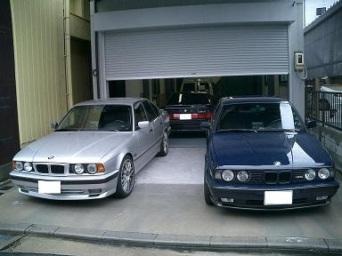
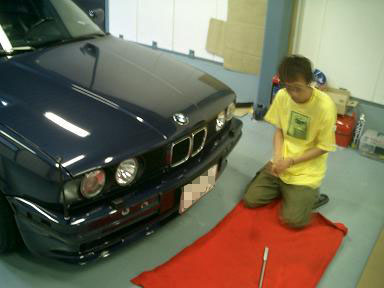
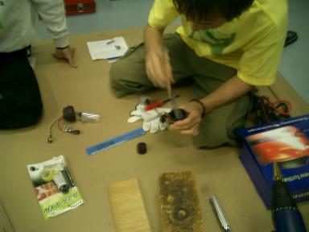
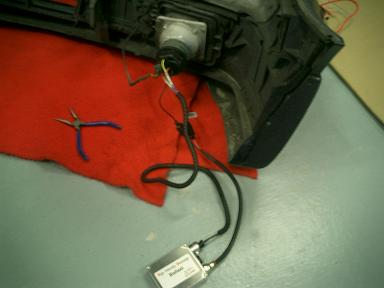
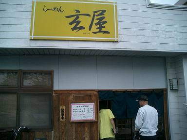
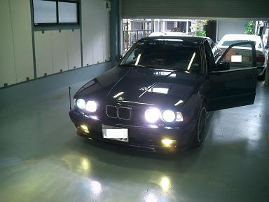
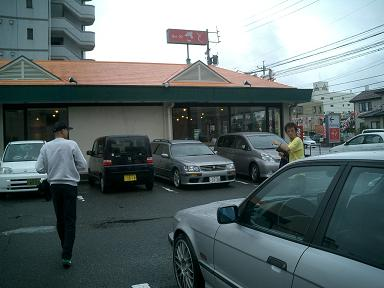
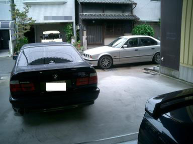

 アルタァ邸に集まったE34たち。 左はけろよん号、奥のがアルタァ号です＾＾  早速準備に取り掛かります。（今回は何故かブレた写真が多いですm(__)m)  もの凄いヤスリ捌きで裏蓋を加工するテクニシャンなアルタァさん（笑  あっという間に点灯確認＾＾無事点灯したのでコーキング剤が乾くまで待つことに。  アルタァさん行き着けのラーメン屋さんへゴーゴー！  装着して点灯したときの図。 今回の作業で6灯ＨＩＤになりました（゜д゜）  場所を移してウダウダは続きます・・・ ケロヨン号に相乗りさせていただいてファミレスへゴーゴー！ 前期と後期ではシートの素材や内装など違うのを発見（・д・）σ  こうして本来の目的、「けろよんさんを6灯ＨＩＤで洗脳するオフ」は終了しＨＩＤオフその３へとつづく（笑